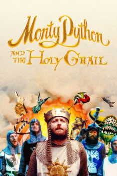

Country:United Kingdom, 91 minutes
Spoken languages:French, Latin, English
Genres:Adventure, Comedy, Fantasy
Director(s):Terry Gilliam, Terry Jones
Writer(s):Graham Chapman, John Cleese, Eric Idle, Terry Gilliam, Terry Jones
Video Codec:Unknown
Number: 6273

Certification:PG
Storyline:
King Arthur, accompanied by his squire, recruits his Knights of the Round Table, including Sir Bedevere the Wise, Sir Lancelot the Brave, Sir Robin the Not-Quite-So-Brave-As-Sir-Lancelot and Sir Galahad the Pure. On the way, Arthur battles the Black Knight who, despite having had all his limbs chopped off, insists he can still fight. They reach Camelot, but Arthur decides not to enter, as "it is a silly place".
Cast:
Graham Chapman (as King Arthur / Voice of God / Middle Head / Hiccoughing Guard), John Cleese (as Second Swallow-Savvy Guard / The Black Knight / Peasant 3 / Sir Launcelot the Brave / Taunting French Guard / Tim the Enchanter), Eric Idle (as Dead Collector / Peasant 1 / Sir Robin the Not-Quite-So-Brave-as-Sir Launcelot / First Swamp Castle Guard / Concorde / Roger the Shrubber / Brother Maynard), Terry Gilliam (as Patsy / Green Knight / Old Man from Scene 24 (Bridgekeeper) / Sir Bors / Animator / Gorilla Hand), Terry Jones (as Dennis's Mother / Sir Bedevere / Left Head / Prince Herbert / Voice of Cartoon Scribe)
Medium: Media file,
Location: D:\Monty Python And the Holy Grail\Monty Python And the Holy Grail.mp4
Loaned: No
Aspect ratio: Unknown